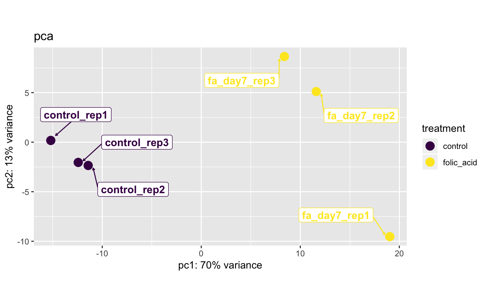
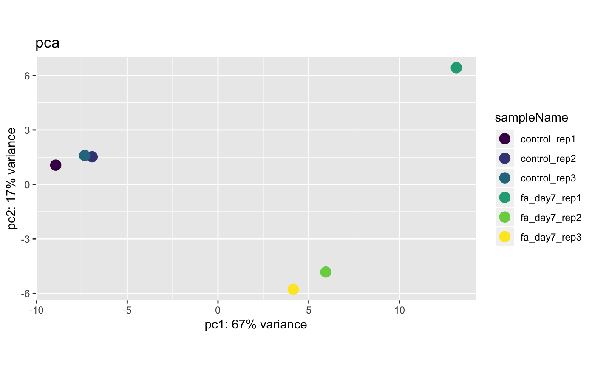

Wrapper for DESeq2::plotPCA() that improves principal component analysis
(PCA) sample coloring and labeling.
# S4 method for bcbioRNASeq plotPCA(object, normalized = c("rlog", "vst", "tmm", "tpm"), genes = NULL, samples = NULL, interestingGroups, color = scale_color_viridis(discrete = TRUE), label = FALSE, title = "pca", return = c("ggplot", "data.frame"), ...)
Arguments
| object | Object. |
|---|---|
| normalized | Character indicating which normalization method to apply:
|
| genes | Character vector of genes to include. These must match the rownames of the object. It is best practice to use the stable gene identifiers from Ensembl (e.g. "ENSG00000000003") and not the gene symbols. |
| samples | Character vector of samples to include. |
| interestingGroups | Character vector denoting groups of interest that
define the samples. If left unset, defaults to |
| color | Desired ggplot color scale. Must supply discrete values. When
set to |
| label | Superimpose sample text labels on the plot. |
| title | Title of plot. |
| return | Object class to return. Uses |
| ... | Additional arguments. |
Value
ggplot or data.frame.
See also
getMethod("plotPCA", "DESeqTransform")
Other Quality Control Functions: plot5Prime3PrimeBias,
plotCorrelationHeatmap,
plotCountDensity,
plotCountsPerGene,
plotDispEsts,
plotExonicMappingRate,
plotGenderMarkers,
plotGeneSaturation,
plotGenesDetected,
plotIntronicMappingRate,
plotMappedReads,
plotMappingRate, plotMeanSD,
plotPCACovariates,
plotRRNAMappingRate,
plotTotalReads
Examples
# bcbioRNASeq ==== plotPCA(bcb_small, label = FALSE)#>plotPCA(bcb_small, label = TRUE)#># Select samples plotPCA( object = bcb_small, samples = head(colnames(bcb_small), 4L), label = TRUE )#>